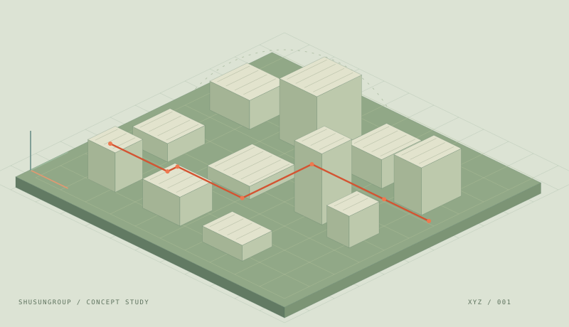

Illustrative coverSIMULATION PLATFORM
HoloChanTwin
Digital twin simulation software for holographic surface channels.
- Research focus
- Holographic surface channel simulation
- Project
- ShuSunLab / HoloChanTwin
- Usage information
- Check the repository for current software, requirements, and usage materials.